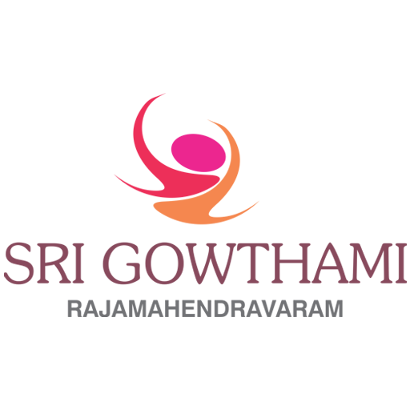

ENGINEERING · CURRENT
Aditya College of Engineering and Technology
B.Tech — Computer Science and Engineering · 3rd Year
COMPUTER SCIENCE & ENGINEERING STUDENT
Building practical software projects, exploring modern web technologies, UI/UX and data-driven problem solving.
I’m Srinidhi Chandramouli, a 3rd-year Computer Science Engineering student at Aditya College of Engineering and Technology, with a growing interest in turning ideas into practical, useful technology.
I enjoy exploring Data Analytics, Web Development, Software Engineering, UI/UX Development, Artificial Intelligence, and Data Visualization.
Through projects and hands-on learning, I’m building my understanding of programming, databases, web technologies, data, and software development.
I believe in learning by building — experimenting with new technologies, solving problems, improving my skills, and turning what I learn into working projects.
Currently, I’m focused on strengthening my technical foundation, gaining real-world experience, and preparing for internship opportunities in the technology field.
Academic journey from school to engineering.
B.Tech — Computer Science and Engineering · 3rd Year
Intermediate

10th Standard
C · C++ · Java · Python
SQL
HTML · CSS
Full-Stack Development · Software Development · Web Development
UI/UX Development · Data Analytics
Open a project to view its GitHub repository.
Analyzes failed payment cases and prioritizes them to support effective revenue recovery and collections decisions.
View on GitHub ↗Web-based application for submitting, managing, and tracking campus-related complaints.
View on GitHub ↗Interactive Tic-Tac-Toe game with a modern neon-inspired interface and engaging gameplay.
View on GitHub ↗Web-based BMI calculator for entering relevant measurements and obtaining calculated BMI.
View on GitHub ↗Resume-building application designed to organize professional resume content through a user-friendly interface.
View on GitHub ↗Programming-oriented project designed around coding practice and interactive problem-solving.
View on GitHub ↗Desktop-oriented tutorial/application project demonstrating practical programming and application-development concepts.
Project focused on detecting potentially fake job and internship opportunities.
View on GitHub ↗Human resource management system project shared through the provided repository.
View on GitHub ↗Full-Stack / Web Development Intern
Gaining practical experience in full-stack and web development through an ongoing internship.Web Development Intern
Gaining practical exposure to web development through an ongoing internship.Open a certificate card to view its document.
Participated in the Adobe University Hackathon.
Advanced to Round 2 of the Odoo Hackathon.
08 / CONTACT
Rajahmundry, Andhra Pradesh · 8522086944
SrinidhiChandramouli7@gmail.com ↗